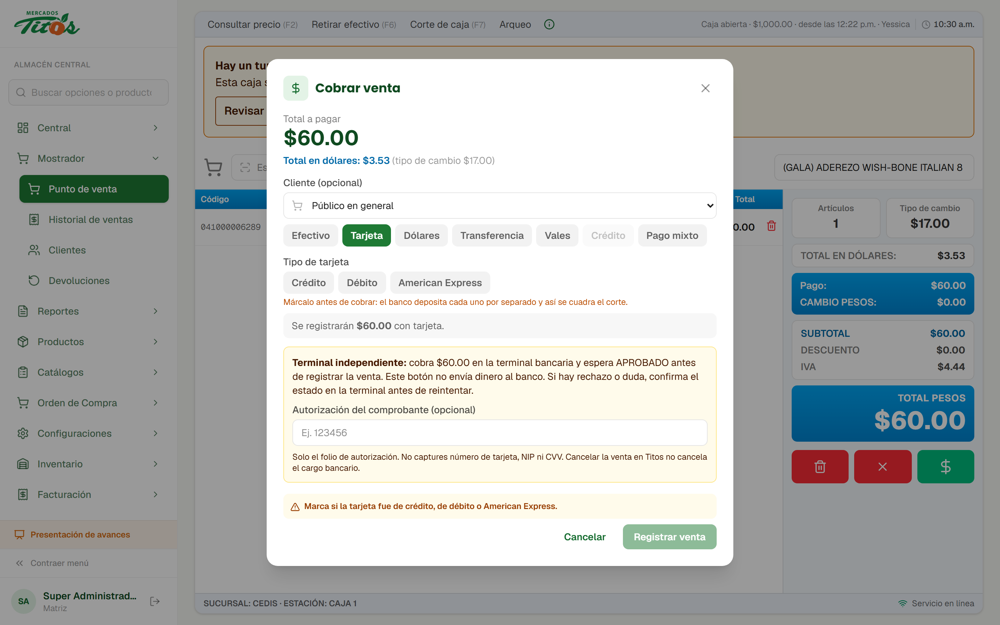

Manual y anexos revisados
El manual de integración de Banorte y sus anexos IV a VIII: ejemplo de integración, parámetros, códigos de error, comprobantes y librerías.
Esta semana fue de preparación para cobrar con tarjeta desde el sistema. Se revisó la documentación de Banorte, se localizó la terminal en la red y se le dejó una dirección fija. También quedó definido cómo se va a conectar la caja y qué tiene que mandar Banorte para terminar.
Esta semana no hay cambios nuevos en las pantallas del sistema: el trabajo fue con la terminal y la documentación del banco.
El manual de integración de Banorte y sus anexos IV a VIII: ejemplo de integración, parámetros, códigos de error, comprobantes y librerías.
Se encontró la terminal PAX A920Pro conectada a la red Wi-Fi, en modo "Esperando comando · Vía red".
La terminal cambiaba de dirección en la red. Se encontró la causa y se corrigió para que la caja siempre la encuentre en el mismo lugar.
Se comprobó desde una computadora en la misma red que la terminal contesta en el puerto por el que recibe los cobros.
Un programa pequeño en la computadora de la caja hará de puente entre el sistema y la terminal, igual que con el escáner.
Quedó claro qué piezas faltan y a quién pedirlas. Se preparó el mensaje para solicitarlas.
Banorte pide que cada terminal tenga una dirección fija en la red. Es la condición para que la caja le pueda mandar el importe a cobrar.
Lo que pasaba
La terminal aparecía cada vez con una dirección distinta. La causa era que se conectaba al Wi-Fi con una identificación aleatoria, y el módem la trataba como un equipo nuevo cada vez.
Lo que pasa ahora
Se desactivó esa identificación aleatoria y la terminal usa la suya. Desde entonces conserva su dirección y responde en el puerto de cobros.
Para que la dirección no cambie ni al reiniciar el módem, conviene reservarla en su configuración. Es un ajuste de cinco minutos.
La terminal tiene USB y Bluetooth, pero Banorte la configuró para recibir cobros por la red. No hace falta cablearla a la caja.
Banorte recomienda una conexión exclusiva para las terminales y una de respaldo. Si se cae el internet, se cobra con la terminal por separado, como hoy.
El sistema vive en internet y no puede ver los equipos de la tienda. Por eso, igual que con el escáner, un puente instalado en la computadora de la caja hace la conexión.
El cajero elige Tarjeta y el sistema envía el total al puente de esa caja.
Con la librería de Banorte, el puente le indica a la terminal el cobro por ese importe.
La terminal pide la tarjeta y el NIP, y Banorte aprueba o rechaza.
La respuesta regresa a la caja con su autorización, y la venta se guarda sin capturar el folio a mano.
Hoy el cajero escribe el total en la terminal y luego registra la venta en el sistema. Con la conexión, el importe viaja solo y no hay diferencias por un dedo de más.
Venta, venta con promoción (meses), preautorización, reautorización, postautorización, devolución, cancelación, reversa, cashback y verificación. Para empezar bastan venta, devolución y cancelación.
El número, el NIP y el CVV se capturan solo en la terminal. Al sistema llegan la autorización, el tipo de tarjeta y los últimos cuatro dígitos.
Mientras llega lo del banco, la caja sigue funcionando como hasta ahora: se cobra en la terminal y la venta se registra en el sistema.

Banorte pide que el comprobante lleve, entre otros, afiliación, fecha y hora, tipo de operación, autorización, últimos 4 dígitos y la firma cuando aplique. Se agregará al ticket térmico.
Las ventas con tarjeta se siguen separando por terminal y por tipo de tarjeta, como en el corte de hoy. Solo deja de haber captura a mano.
Sin estas piezas no se puede mandar un cobro a la terminal. Ya se preparó el mensaje para pedirlas.
Antes de usarla con clientes, Banorte hace una prueba con su laboratorio: se llena una solicitud y una lista de cobros de prueba, y al final entregan una carta. Si se cobra antes, Banorte no responde por fallas, contracargos ni depósitos.
Cuando lleguen, el usuario y la contraseña de Payworks se guardan en la configuración protegida del servidor, no en pantallas ni en el código.
Lo único que se puede hacer en la tienda mientras tanto: dejar fija la dirección de la terminal en el módem.
La terminal ya está ubicada y el camino está definido.
En cuanto lleguen las credenciales y la librería de Banorte, se arma el puente y se certifica.